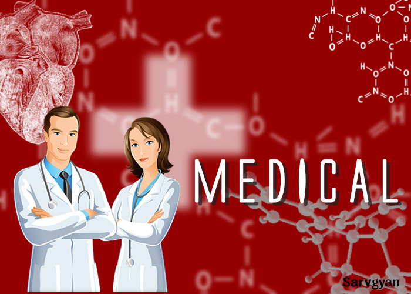

The “Medical field” is one of the best, reputed and respected professional fields in India and abroad.
When we talk about Medical, an image of an MBBS rises in our mind.
It is not so!!
There are various courses other than MBBS, in the medical field in India.
But the question is still there!
What is the best medical course after 12th in science and after 12th in biology?
Are you still waiting for the answer of…………….?
What should i do after 12th in medical field?
Medical field contains a broad range of academic education other than MBBS. It contains the certificate courses, medical diploma courses, bachelor degree courses, master degree courses and many short time knowledge booster courses for medical professionals. The candidates having PCB or PCMB group in their +2 can appear in NEET exam for admission to the top medical colleges of the country.
Various institutions and university from abroad and in India is offering some of the medical courses by Online. IGNOU is one of the leading universities that provide the education in the medical field by online admission.
For admission to bachelor degree, the students must have to prepare for medical entrance test after 12th standard. The students must have science with Biology in 12th standard.
NEET is the only national level medical entrance test after 12th. Some universities like AIIMS & JIPMER conduct their own entrance examination.
It is an expanded field of educational study and there are so many courses including medical diploma courses, degree courses, certificate courses and lab technical courses & other medical technical courses.
Medical courses are in demand and fast growing. It is a hard working field but a reputed one also. The patients are being cured for 24×7.
The healthcare industry is very large and around 14 million jobs are in the US only.
The career is divided at the level of your education in the medical field. Whether you have a diploma or bachelor degree or master degree, you are in a race of a good career.
After the completion of medical course you can choose the right organization or industry or hospital.
There are so many industries, organizations, pharmaceutics, hospital, research laboratories and related industries in India and abroad.
Some leading employers in the field of health care are as the following (recruiters in medical field):
The medical field is one of the highest salary paying fields in India and abroad. Today, in the US, the demand of well skilled and educated medical candidate is rising.
Being of a big pool of different courses, the medical field offers the student a wide range of good salaries.
If you have MD or MS degree you will get the $500000 to 1000000 per annum.
If you have done the bachelor, you can earn the $100000 to 300000 per annum.
If you posses the technician, nursing or assistance course, you can get the $50000 to 100000 per annum.
The best medical courses are as the following:
1. M. B. B. S. (Bachelor of Medicine and Bachelor of Surgery) – 5.5 yearsMBBS is the bachelor degree in medical field for cure & diagnose, awarded in many countries.
2. B. D. S. (Bachelor of Dental Surgery) – 4 yearsBDS is a professional degree programme in dentistry.
3. B. H. M. S. (Bachelor of Homeopathic Medicine & Surgery) – 5.5 yearsBHMS is a bachelor degree in Homeopathic Education in India regulated by the National Institute of Homeopathy.
4. B. A. M. S. (Bachelor of Ayurvedic Medicine and Surgery) – 5.5 yearsBAMS is a bachelor degree in ayurvedic system of medical field. In India, the Ayurvedic Education is regulated by the Central Council of Indian Medicine (CCIM).
5. M.D. (Doctor of Medicine) – 3 yearsThis degree is awarded to the doctors who are physicians. The minimum eligibility for this course is MBBS.
6. M.S. (Master of Surgery) – 3 yearsThis degree is awarded to the doctors who master course in surgery. The minimum eligibility for this course is MBBS.
7. D.M (Doctorate in Medicine) – 2 to 3 yearsDM is a doctorate degree equivalent to the PhD degree awarded by the many universities in the USA. Doctors having M.D degree are eligible for this course.
8. B.Pharm (Bachelor of Pharmacy) – 4 yearsCandidate must have passed 10+2 with at least 50% marks with biology/mathematics as one of the compulsory subjects, or D.Pharm (Diploma in Pharmacy). This degree involves the knowledge of pharmacy.
9. B.Sc Nursing - 4 yearsCandidate must have passed 10+2 with Physics, Chemistry & Biology with a minimum of 45% marks. The motive of B.Sc. Nursing programme is to produce the qualified nurses, as a member of the health care team.
10. B.P.T.(Physiotherapy - 4.5 yearsCandidate must have passed in 12th class or equivalent with a minimum 50% marks in physics, chemistry and biology. Physiotherapy helps the temporary disabled people in their rehabilitation.
11. B.O.T.(Occupational Therapy) - 3 yearsCandidate must have passed 10+2 with Physics, Chemistry & Biology. Some institutions may opt for an entrance examination. The Occupational Therapy helps the people to enable in their everyday life and treats the emotionally and physically challenged people.
12. B.U.M.S(Unani Medicine) - 5 yearsBUMS degree is equivalent to the BAMS, but in Unani medicines. Candidate must have passed 10+2 with Physics, Chemistry & Biology. Urdu is compulsory up to 10th class or equivalent Education. Candidate must have attained minimum 17 years of age at the admission.
13.D.Pharm(Ayurvedic,Siddha Medicine) - 2 yearsIt is a medical diploma course in pharmacy of ayurvedic medicines. Candidate must have passed 10+2 with Physics, Chemistry & Biology.
14. BMLT (Bachelor of Medical Lab Technicians) – 3 yearsIt is a bachelor degree of medical laboratory technology, contains the entire laboratory practices of the medical system. Candidate must have cleared the 10+2 exam with PCB. Various institutions are offering the B.Sc. programme in medical laboratory technology in India.
14. DMLT (Diploma of Medical Lab Technicians) – 3 yearsIt is a medical diploma course of medical laboratory technology, contains the laboratory practices of the medical field. Candidate must have cleared the 10+2 exam with PCB.
For more info about this blog you can contact us